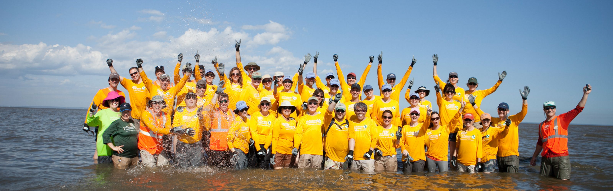

Who We Are

Why We Do
Nature conservation is crucial for preserving biodiversity, maintaining ecological balance, and ensuring sustainable resources for future generations. It protects ecosystems, supports climate regulation, and safeguards the well-being of both wildlife and humans. Conservation efforts contribute to a healthier planet and mitigate the impact of human activities on the environment.

What Impact We Created
Human activities have had a significant impact on nature, leading to deforestation, loss of biodiversity, pollution, and climate change. These impacts have disrupted ecosystems, endangered species, and altered natural processes. Conservation efforts aim to mitigate these effects, promoting the restoration of ecosystems, protection of wildlife, and sustainable practices to ensure the health and balance of nature.